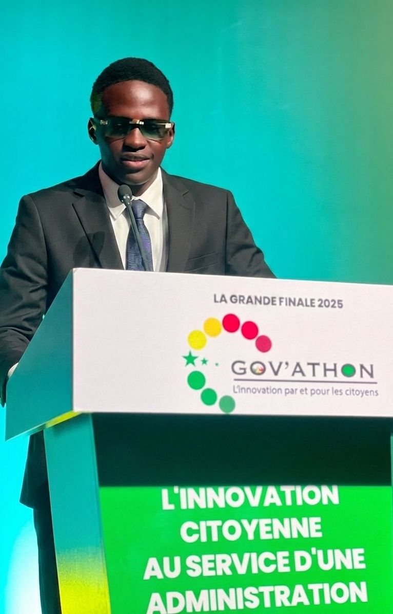

Étudiant en Langues Étrangères Appliquées à l’UIDT de Thiès, je me spécialise dans une orientation tournée vers le commerce international. Je développe une double compétence stratégique en combinant maîtrise des outils bureautiques et créativité visuelle.
À l’aise avec Excel, Word et PowerPoint, je sait structurer, analyser et présenter l’information de manière claire et efficace. En parallèle, j' évolue dans le domaine de l’infographie où je conçoit des affiches et propose divers services visuels adaptés aux besoins des particuliers et des entreprises.
Rigoureux, créatif et orienté résultats, je construits progressivement un profil polyvalent capable de s’adapter aux exigences du monde professionnel et des échanges internationaux.
Hire meTouchez une carte pour en savoir plus
Maîtrise avancée de la suite Office — Word, Excel et PowerPoint — pour produire des documents soignés, des tableaux de bord clairs et des présentations à fort impact visuel.

Utilisation experte de Photoshop et des outils de retouche photo pour concevoir des affiches, visuels et supports de communication qui captivent au premier regard.
Trilingue français, anglais et espagnol — une compétence rare qui me permet d'évoluer dans des environnements multiculturels et de construire un profil résolument polyvalent.